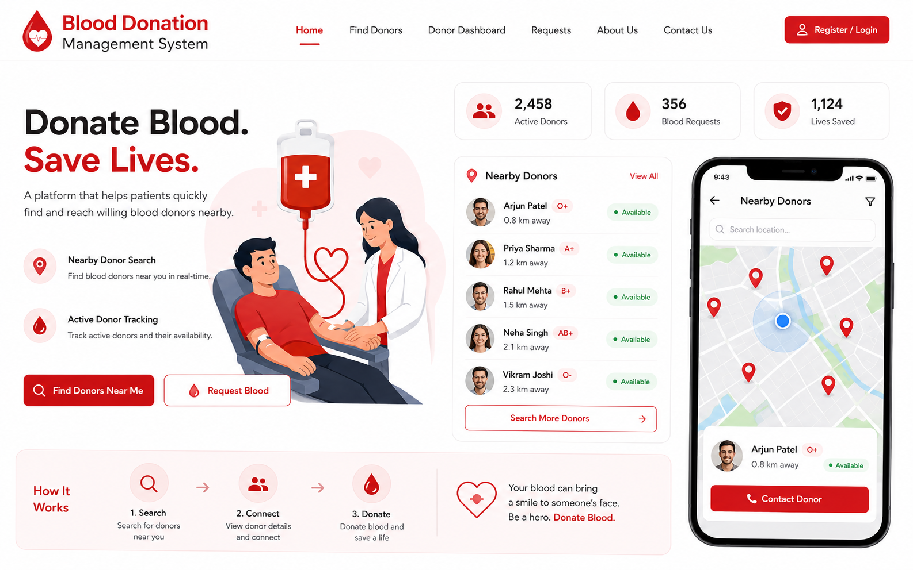
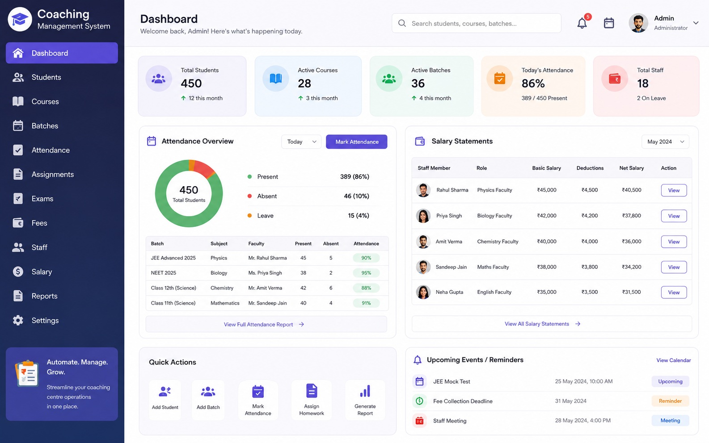
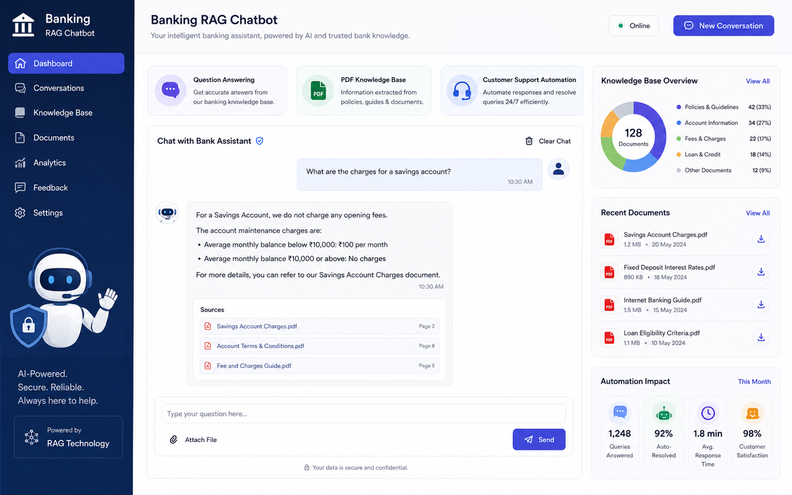

01
Blood Donation Management System
Connecting donors and recipients with nearby search and real-time tracking.
DjangoPostgreSQLCloudinary
Backend Developer & AI Enthusiast
Solving real-world problems through code, AI, and leadership.
I am a problem solver who loves turning hard, real-world challenges into reliable software. My work spans backend engineering, applied AI systems, and competitive programming — and I care just as much about the people side: teaching, leadership, and community building.
From founding CodeTrron to coordinating bootcamps and setting problems for aspiring programmers, I enjoy creating systems and communities that outlast any single project.
A few systems I have designed and shipped end to end — from database to interface.

Connecting donors and recipients with nearby search and real-time tracking.

Attendance, salary statements, and invoice generation for a coaching centre.

A retrieval-augmented assistant answering questions from a PDF knowledge base.
Built a platform and community focused on practical, problem-driven learning.
Sharpened algorithmic thinking across Codeforces and Beecrowd.
Cadet coordinator at the IIUC Competitive Programming Society.
I’m open to backend, AI, and software engineering opportunities — and always happy to talk shop.